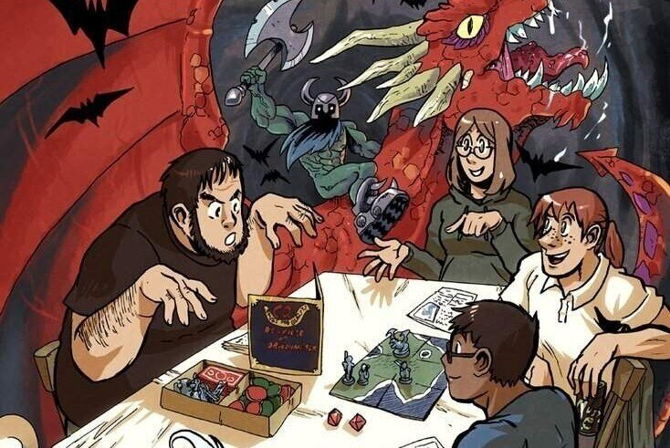

Давным-давно, в одном далеком королевстве под названием Среднезападные Соединённые Штаты, а точнее в штатах Миннесота и Висконсин, группа друзей собралась, чтоб навсегда изменить историю игр. Это не было их целью само по себе, просто они устали читать сказки о волшебных мирах, наполненных чудовищами и приключениями. Они сами хотели играть в этих мирах. Это и подтолкнуло их к созданию DUNGEONS & DRAGONS, которые, в свою очередь, зажгли огонь игровой революции, горящий по сей день. Из этого можно сделать два вывода. Первый указывает на их изобретательность и гениальное предположение о том, что игра является лучшим способом исследовать миры, которые иначе бы даже не существовали. Почти все современные электронные игры чем-либо обязаны D&D. Второй вывод о врождённой привлекательности, свойственной их детищу. DUNGEONS & DRAGONS — позитивный феномен мирового масштаба. Эта игра была первой, и до сих пор остаётся лучшей в своей категории. Для того чтобы играть в D&D, и делать это хорошо, вы не обязаны прочесть все правила и не нужно запоминать все детали игры. Не нужно в совершенстве владеть искусством бросания этих «забавных кубиков». Ничто из этого не имеет отношения к качественной игре. Вам понадобится всего две вещи. Первое — это друзья, с которыми вы сможете разделить игру. Играть в игры с друзьями всегда весело, но D&D это больше, чем простое развлечение. Игра D&D это пример коллективного творчества. Вы с вашими друзьями создаёте эпическую историю, наполненную действием и запоминающимися событиями. Вы создаёте одним вам понятные шутки, заставляющие вас смеяться годы спустя. Кости могут обойтись с вами жестоко, но вы не отступите. Совместное творчество создаст истории, которые вы будете пересказывать раз за разом, начиная с полных абсурда ситуаций и заканчивая достойными легенд событиями. Если у вас нет друзей, заинтересованных в игре, не беспокойтесь. На помощь придёт особая алхимия, которая возникает вокруг игрового стола, и которой никто не способен сопротивляться. Сыграйте в игру с малознакомым человеком, и скорее всего вы станете друзьями. Это замечательный побочный эффект игры. Ближайшая игровая группа не дальше, чем игровой магазин, Интернет-форум или игровой конвент. Вторая вещь, которая вам понадобится, это живое воображение, или, что даже более важно, желание использовать то воображение, которым вас наделила природа. Вы не обязаны быть блестящим рассказчиком или великолепным актёром. Достаточно желания творить и делиться этим с другими. К счастью, так же как D&D может укрепить дружбу, оно придаёт смелости для творчества. D&D это игра, которая учит находить мудрые решения, делиться внезапными идеями, ведущими к решению проблем, и представлять, что могло бы случиться, вместо того, чтобы просто принять то, что есть. Первые персонажи и приключения, которые вы создадите, почти наверняка окажутся сборищем всевозможных клише. Это правдиво для всех, начиная с величайших в мире Мастеров. Примите это, и сделайте второго персонажа или приключение лучше, а третьего ещё лучше. Повторяйте это снова и снова, и скоро вы сможете создать что угодно, начиная с предыстории персонажа, и заканчивая фэнтезийным миром для эпических приключений. Как только вы овладеете этим навыком, он будет с вами навсегда. Бессчётное количество писателей, актёров и людей других творческих профессий начинали с нескольких листков заметок о D&D, кухонного стола и пригоршни игральных костей. Во всём же остальном игра полностью ваша. Дружеские отношения, возникшие за столом, приключения, в которые вы ввязались, персонажи, которых создали, воспоминания, которые накопили, это всё ваше. D&D — это ваш персональный уголок вселенной, место, где вы можете делать всё, что угодно. Теперь вперёд! Читайте правила игры и историю игровых миров, но помните, что вы — именно тот человек, который оживляет их. Они ничто без той вспышки света, которую вы им дарите.
